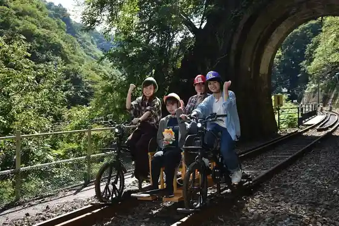
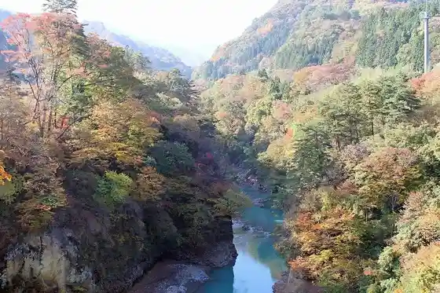
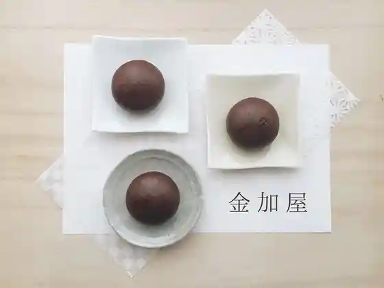

Azuma Kyo Rerubaiku A-Gattan! (Agattan)
Higashiagatsuma, Gunma · 0279-26-9431 · Official / source link

Iwai Shinsui Park
Higashiagatsuma, Gunma · 0279-68-2111 · Official / source link
Kuni Shitei Historic Site (Iwabitsu Castle Ruins)
Higashiagatsuma, Gunma · 0279-68-2111 · Official / source link
Azuma Gorge
Higashiagatsuma, Gunma · 0279-68-2111 · Official / source link

Kin Ka Ya
Higashiagatsuma, Gunma · 0279-67-2105 · Official / source link

Suisen Hatake
Higashiagatsuma, Gunma · 0279-68-2111 · Official / source link
Meisho (Azuma Kyo) no Mitsubatsutsuji
Higashiagatsuma, Gunma · 0279-68-2111 · Official / source link
Kyu Iwa Shima Daini Shogakko no O Maki Sakura
Higashiagatsuma, Gunma · 0279-68-2111 · Official / source link
Roadside Station Agatsuma Kyo
Higashiagatsuma, Gunma · 0279-67-3193 · Official / source link
Iwabitsu Yamahira Sawanobori Yamaguchi Tourist Information
Higashiagatsuma, Gunma · 0279-68-2111 · Official / source link
Hako Shima Chiku (Hako Shima Yusui Soi) Hotaru Kansho
Higashiagatsuma, Gunma · 0279-68-2111 · Official / source link
Roadside Station (Agatsuma Kyo) Irumineshon
Higashiagatsuma, Gunma · 0279-67-3193 · Official / source link
Kusurishi Onsen (2024 Nen 8 Gatsu 31 Nichi Womotte, Ichiji Kyukan)
Higashiagatsuma, Gunma · 0279-69-2422 · Official / source link
Agatsumafureai Park
Higashiagatsuma, Gunma · 0279-67-3193 · Official / source link